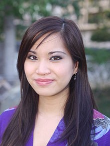
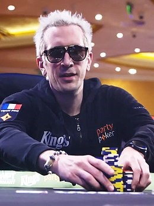
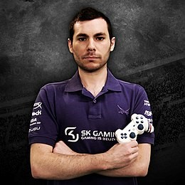

Marie-Laure Norindr, dit Kayane, est une professionnelle des jeux de combat. Elle est aujourd’hui devenue l’ambassadrice de l’Esport français.
Bertrand Grospellier, dit Elky est un champion du jeu Starkraft qui a construit sa carrière en Corée.
Bruce Grannec, dit Spank et surnommé « The Machine » est un spécialiste des jeux vidéo de football (multiple champion de France et du monde). Il est maintenant animateur et commentateur sur le jeu Fifa sur la chaine l’Equipe 21.
